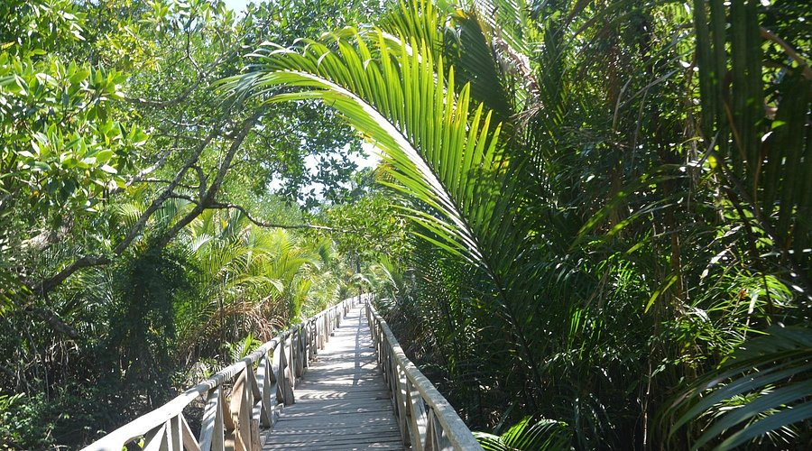
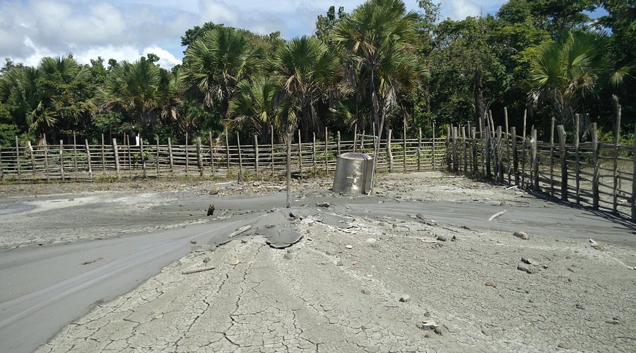
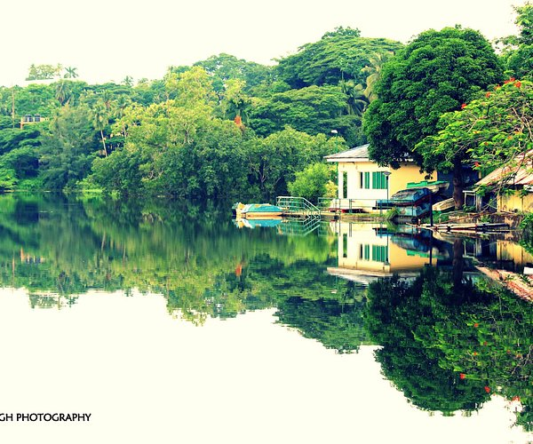

Famous Places
Dhani Nala Beach
Dhani Nallah is a nature walkway and beach on the outskirts of Rangat, Middle Andaman Island, in the Andaman Islands. It is located 20 km from Rangat adjacent to Andaman trunk road (ATR). Dhani Nallah is named after a mangrove associate locally called as Dhanipatti. The wooden boardwalk meandering through mangrove creek for a distance of 713 m is the main tourist attraction for the place.
Limestone Cave

The Limestone cave formations at Nayadera and the vast mangrove-covered creeks are the main attractions for tourists in Baratang. The island is known for limestones, which deposit themselves either above the soil or under the ground forming interesting formations and layers. You can easily get a boat at the Nilambur jetty, which will take you to the famous caves. On the way, you can admire scenic coastline covered with mangrove forests and you even pass through mangrove-covered canals making the ride more exciting.
Mud Volcano
A mud volcano or mud dome is a landform created by the eruption of mud or slurries, water and gases. Several geological processes may cause the formation of mud volcanoes. Mud volcanoes are not true igneous volcanoes as they do not produce lava and are not necessarily driven by magmatic activity. Mud volcanoes may range in size from merely 1 or 2 meters high and 1 or 2 meters wide, to 700 meters high and 10 kilometers wide. Smaller mud exudations are sometimes referred to as mud-pots.
Port Blair
Port Blair officially named as Sri Vijaya Puram, is the capital city of the Andaman and Nicobar Islands, a union territory of India in the Bay of Bengal. It is also the local administrative sub-division (tehsil) of the islands, the headquarters for the district of South Andaman, and the territory's only notified town.